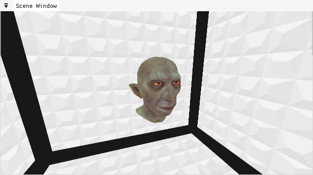
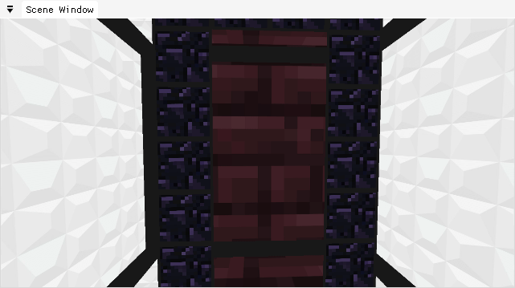

Project Information
- Language: C++
- Graphics API: DirectX 11
- Creation: Y3 S1 & S2
- Source URL: GitHub Page
Non-Euclidean Framework
This project was created as part of my Games Technology Research Project module in my third year. Being a research project, I had decided to explore the topic of non-Euclidean geometry and how it could be used in games. This required an understanding of Non-Euclidean geometry and space, its applications, and the methods for how it could be implemented in a game engine, including advanced graphics techniques. As such, I decided to create a framework that could be used to create non-Euclidean spaces and objects within them, and to create a demo that would show the possibilities of this framework.
What Did I Learn?
I learned a lot about non-Euclidean geometry and space, and how it could be used in games. I also learned a lot about the mathematics behind the geometry, and how it could be implemented in a game engine. I also learned a lot about advanced graphics techniques, such as stencil masking, RTT and how to apply it alongside recursive scene rendering, and how all these could be used to create non-Euclidean geometry and spaces.
I also learned a lot about the research process, and how to conduct research. I learned how to find relevant research papers, and how to read and understand them, and how to create a research proposal, and how to present my research to others. In reading through various research papers, I was able to develop the underlying mathematics allowing for objects and lighting vectors to be ported to target non-Euclidean spaces.
Adapting Game Engines to Curved Spaces by László Szirmay-Kalos & Milán Magdics was a very useful paper, as it provided a lot of information on how to port objects and lighting vectors to non-Euclidean spaces, and how to implement the mathematics behind it. I also learned a lot about the various types of non-Euclidean geometry, how they could be used in games, and their methods of implementation.
With the knowledge acquired from this, I was able to develop a method for porting all vertex data input, like position and normal data, to a target non-Euclidean space in the vertex shader which each object would use.
float4 Port( float3 ePoint )
{
float3 p = ePoint * NonEuclidean.CurveScale;
float d = length( p );
// Revert to Euclidean if distance is too small
if ( d < 0.0001f )
return float4( p, 1.0f );
float scale = 4.0f;
if ( NonEuclidean.UseHyperbolic )
return float4( p / d * sinh( d ) / scale, cosh( d ) / scale );
if ( NonEuclidean.UseElliptic )
return float4( p / d * sin( d ) * scale, -cos( d ) * scale );
// Euclidean space
return float4( p, 1.0f );
}
To ensure that light vectors were also ported correctly, I modified the dot product and direction functions to account for the curvature of the space, and used this to calculate the correct lighting values on each object.
float DotProduct( float4 u, float4 v )
{
float curv = 0.0f;
if ( NonEuclidean.UseHyperbolic )
curv = -1.0f;
if ( NonEuclidean.UseElliptic )
curv = 1.0f;
return dot( u, v ) - ( ( curv < 0.0f ) ? 2.0f * u.w * v.w : 0.0f );
}
float4 Direction( float4 to, float4 from )
{
float curv = 0.0f;
if ( NonEuclidean.UseHyperbolic )
curv = -1.0f;
if ( NonEuclidean.UseElliptic )
curv = 1.0f;
float dp = ( curv != 0.0f ) ? DotProduct( from, to ) : 1.0f;
return to - from * dp;
}
Examples of the framework in action can be seen below.
- The first gif demonstrates how stencil masking can be used to a non-Euclidean cube, by allowing for various objects to be rendered inside each face by masking the others.
- The second gif demonstrates how RTT and recursive scene rendering can be used to create a non-Euclidean room, by rendering the room to a texture, and then rendering the room again, but with the texture applied to the walls, creating the illusion of a non-Euclidean room.
- The third gif showcases a standard model being ported to a non-Euclidean space, and how the lighting is calculated correctly.
- The fourth gif demonstrates how the framework can be used to create optical illusions which are only possible in non-Euclidean spaces, where the room inside the arch appears to be larger than the room outside the arch.

|

|
|
Non-Euclidean Geometry |
RTT & Recursive Scene Rendering |
|  |  |
|
Elliptic & Hyperbolic Space |
Optical Illusions |
Future Additions
In the future, I would like to add the ability to port the camera to a non-Euclidean space, and also add the ability to port the projection matrix to a non-Euclidean space, which would allow for the creation of non-Euclidean 3D games, rather than porting the objects themselves to a non-Euclidean space, like in the game Hyperbolica. I would also like to improve the non-Euclidean space to appear more seamless like in Manifold Garden, such that the environment would appear to repeat infinitely.